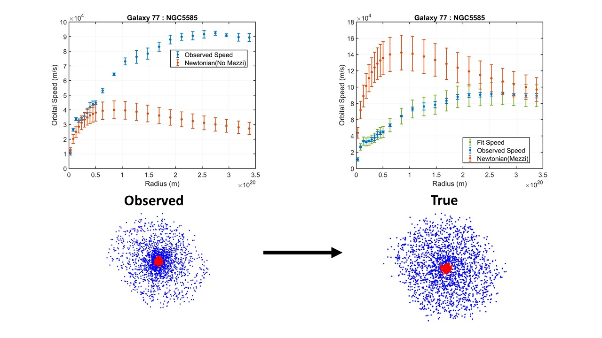
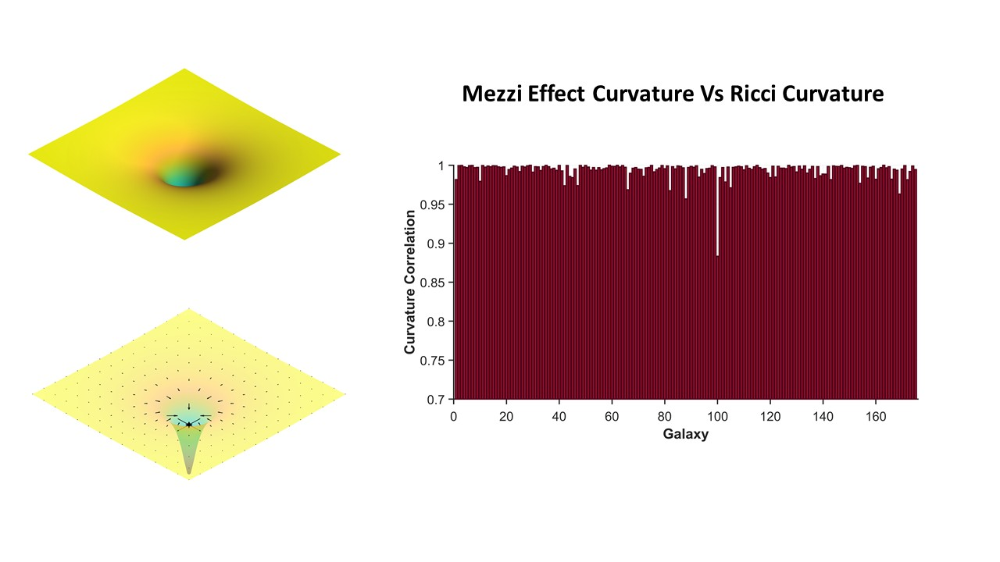

First image description.

Second image description.

Third image description.

Galactic rotation curve discrepancies are typically ascribed to dark mat- ter or modified gravity. This paper proposes an alternative explanation: a relativistic observational effect causing apparent galactic compression, rooted in the hypothesis that gravity arises from spacetime flow dynamics. Using an inverse problem approach, this study demonstrates that Newtonian dynamics can be reconciled with observed galactic rotation curves by incorporating a space-scale factor, which accounts for relativistic observational effects. The analysis of 175 SPARC galaxies reveals a strong correlation between the suggested effect curvature and the Ricci curvature. This study suggests that the observed anomalies in galactic rotation curves may be attributed to a relativistic observational effect, rather than the presence of dark matter. And support the notion that general relativity continues to offer a coherent and unified framework for understanding gravitational phenomena.